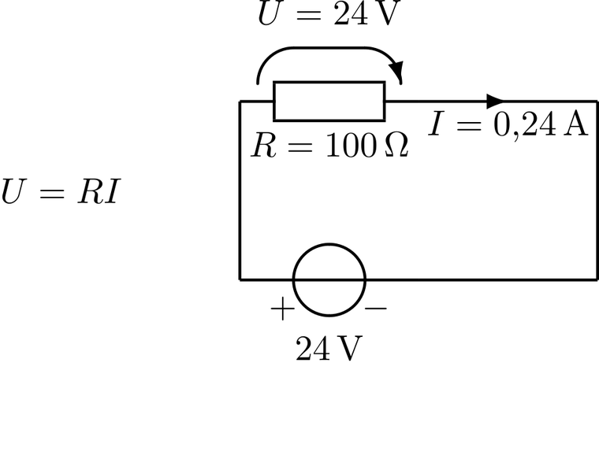
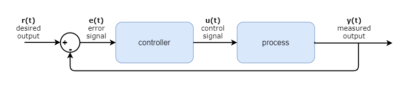
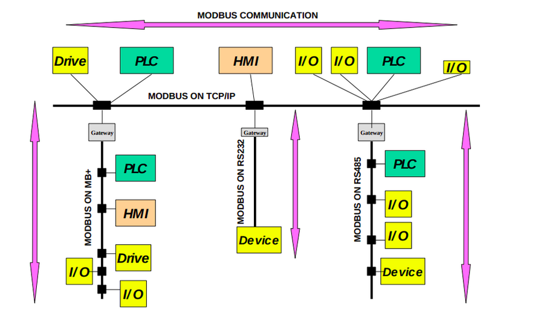

Modul 01 · Pengantar Rekayasa dan Desain
Materi ini membahas titik pertemuan kedua bidang: dari tegangan dan arus listrik, transistor dan logika digital, processor, sensor, sistem kendali, komunikasi, embedded system, hingga PLC, SCADA, dan keamanan sistem industri.
Teknik Elektro bekerja pada domain listrik: rangkaian, elektronika, sinyal, instrumentasi, komunikasi, dan kendali. Teknik Komputer bekerja pada domain sistem komputasi: perangkat keras, perangkat lunak, arsitektur komputer, pemrosesan data, serta cara komputer berinteraksi dengan perangkat lain.
Keduanya bertemu ketika membangun sistem elektronik yang memiliki kemampuan komputasi. Pada sistem seperti itu, bagian sensor, rangkaian, sinyal, aktuator, dan kelistrikan membutuhkan pengetahuan Teknik Elektro, sedangkan bagian processor, program, algoritma, dan pengolahan data membutuhkan Teknik Komputer.
Dunia fisik
|
Sensor bidang Teknik Elektro
|
Rangkaian elektronik
|
Signal conditioning
|
ADC
|
Processor / microcontroller bidang Teknik Komputer
|
Program
|
Keputusan
|
GPIO / driver
|
Actuator
|
Dunia fisikACM dan IEEE Computer Society menyatakan integrasi hardware dan software sebagai unsur kritis dalam pekerjaan computer engineering (ACM & IEEE CS, 2016). ABET sendiri memasukkan rangkaian, pemrograman, elektronika analog dan digital, microcontroller, sistem kendali, komunikasi, serta sistem komputer ke dalam kriteria pendidikan electrical dan computer engineering.
Enam belas materi berikut bukan bagian yang terpisah. Semuanya membentuk satu rantai yang berjalan dari fisik ke digital dan kembali ke fisik.
| No | Materi | Isi ringkas |
|---|---|---|
| 1 | Besaran listrik | Tegangan, arus, resistansi, daya, muatan, energi, resistivitas |
| 2 | Komponen dan transistor | Resistor, kapasitor, induktor, dioda, BJT, MOSFET, timer 555 |
| 3 | Rangkaian listrik | Seri, paralel, pembagi tegangan dan arus, Hukum Kirchhoff |
| 4 | Logika digital | Biner, Boolean, gerbang, adder, K-map, logika sequential, flip-flop |
| 5 | Arsitektur processor | Von Neumann dan Harvard, CISC dan RISC, pipeline, cache, ISA |
| 6 | Microcontroller | Blok terintegrasi,família MCU, MCU dan MPU |
| 7 | Memori dan GPIO | SRAM, DRAM, Flash, NOR dan NAND, memory-mapped I/O, mode GPIO |
| 8 | Antarmuka hardware dan software | Instruksi, register, peripheral, interrupt, DMA, driver, HAL, RTOS |
| 9 | Sensor dan conditioning | Klasifikasi sensor, spesifikasi, op-amp, filter, jembatan Wheatstone |
| 10 | ADC dan DAC | Resolusi, kuantisasi, sampling, aliasing, SNR, ENOB |
| 11 | Actuator | Motor, relay, solenoid, heater, driver, H-bridge |
| 12 | Embedded system | Definisi, ciri, arsitektur, RTOS, real-time |
| 13 | Sistem kendali | Plant, transfer function, PID, Ziegler-Nichols, sampling |
| 14 | Komunikasi | UART, SPI, I2C, CAN, Modbus, Ethernet, nirkabel |
| 15 | IoT dan CPS | Arsitektur berlapis, edge computing, digital twin, 4 pilar |
| 16 | PLC dan SCADA | Siklus scan, IEC 61131-3, I/O, ISA-95, HMI, historian, alarm |
Elektronika mempelajari dan menggunakan komponen serta rangkaian untuk mengendalikan aliran listrik dan memproses sinyal. Bagi Teknik Komputer, elektronika adalah fondasi fisik yang memungkinkan komputer bekerja, karena pada akhirnya komputer tersusun atas rangkaian listrik yang sangat kompleks.
Listrik -> Transistor -> Logic gate -> Rangkaian digital -> Processor -> Komputer| Besaran | Simbol | Satuan | Rumus | Arti |
|---|---|---|---|---|
| Tegangan | V | volt (V) | V = W/A = J/C | Perbedaan potensial listrik antara dua titik; dorongan yang menyebabkan muatan bergerak |
| Arus | I | ampere (A) | I = Q/t = V/R | Laju aliran muatan listrik |
| Resistansi | R | ohm (Ω) | R = V/I | Kemampuan komponen menghambat aliran arus |
| Konduktansi | G | siemens (S) | G = 1/R | Kebalikan resistansi; Curriculum persamaan I−V pada resistor ohmik |
| Resistivitas | ρ | ohm·meter | R = ρL/A | Sifat material, tidak bergantung panjang atau luas penampang |
| Muatan | Q | coulomb (C) | Q = I·t | Jumlah muatan listrik yang lewat satu titik |
| Daya | P | watt (W) | P = V·I = I²R = V²/R | Laju penggunaan atau transfer energi listrik |
| Energi | E | joule (J) | E = P·t = V·Q | Energi listrik yang terpakai atau disimpan |
Muatan satu elektron adalah e = 1,602176634 × 10−19 C, nilai yang eksak sejak redefinisi SI pada 2019. Karena itu satu coulomb setara dengan 6,241509 × 1018 elektron, dan satu ampere sama dengan satu coulomb per detik (NIST, SI Units: Electric Current).
Hubungan mendasar antara tegangan, arus, dan resistansi adalah Hukum Ohm:
Pada diagram karakteristik I–V, kemiringan garis bernilai 1/R, sehingga sama dengan konduktansi. Komponen disebut ohmik apabila arus sebanding linier dengan tegangan.

Pemilihan bentuk rumus mengikuti kondisi yang diketahui. Ketika tegangan tetap, gunakan P = V²/R agar tidak perlu menghitung arus terlebih dahulu. Ketika arus tetap, gunakan P = I²R.
Contoh hitung 1 · Empat besaran dari satu resistor
Diberikan R = 470 Ω dan V = 12 V:
I = V / R = 12 / 470 = 0,02553 A = 25,53 mA
P = V * I = 12 * 0,02553 = 0,3064 W
P = I^2 * R = (0,02553)^2 * 470 = 0,3064 W (cek)
P = V^2 / R = 144 / 470 = 0,3064 W (cek)
E dalam 1 jam = P * t = 0,3064 * 3600 = 1103 J = 1,10 kJContoh hitung 2 · Muatan, energi, dan jumlah elektron
Diberikan I = 2,0 A pada 230 V selama 5 menit:
t = 5 * 60 = 300 s
Q = I * t = 2,0 * 300 = 600 C
E = V * Q = 230 * 600 = 138 000 J = 138 kJ
E = 138 000 / 3,6 * 10^6 = 0,0383 kWh = 38,3 Wh
N = Q / e = 600 / (1,602176634 * 10^-19) = 3,745 * 10^21 elektron
P = V * I = 230 * 2,0 = 460 WResistansi kawat bukan sifat tetap, melainkan R = ρL/A. Kawat yang lebih panjang memiliki R lebih besar, kawat yang lebih tebal memiliki R lebih kecil, dan R juga naik terhadap suhu untuk logam.
| Material | ρ (Ω·m) | σ (S/m) | Penggunaan |
|---|---|---|---|
| Perak | 1,59 × 10−8 | 6,30 × 107 | Kontak dan konduktor premium |
| Tembaga | 1,68 × 10−8 | 5,96 × 107 | Kabel dan PCB |
| Emas | 2,44 × 10−8 | 4,10 × 107 | Bonding pada cip |
| Aluminium | 2,82 × 10−8 | 3,5 × 107 | Penghantar listrik dan kabel |
| Tungsten | 5,60 × 10−8 | 1,79 × 107 | Filamen, target vakum |
| Constantan | 4,9 × 10−7 | 2 × 106 | Resistor presisi |
| Silikon (intrinsik) | sekitar 103 | sekitar 10−4 | Semikonduktor |
| Kaca | 1010 sampai 1014 | 10−14 sampai 10−10 | Isolator |
Pengaruh suhu mengikuti persamaan:
Contoh hitung 3 · Resistivitas kawat dan perubahan suhu
Kawat tembaga L = 10 m dengan luas penampang 2 mm²:
A = 2 mm^2 = 2 * 10^-6 m^2
R = rho * L / A = (1,68 * 10^-8 * 10) / (2 * 10^-6) = 0,084 ohm
G = 1 / R = 11,90 S
Tembaga dipanaskan dari 20 C ke 100 C, alpha = 3,9 * 10^-3 /C, R_20 = 100 ohm:
R_100 = 100 * [1 + 0,0039 * (100 - 20)] = 100 * 1,312 = 131,2 ohmNilai resistor القراءة dari pita warna mengikuti R = (A × 10 + B) × 10C dengan toleransi pita keempat. Pita keempat pada resistor lima pita adalah pengali, bukan toleransi.
| Warna | Angka | Warna | Angka | Pengali |
|---|---|---|---|---|
| Hitam | 0 | Biru | 6 | Emas ×0,1 |
| Cokelat | 1 | Ungu | 7 | Perak ×0,01 |
| Merah | 2 | Abu-abu | 8 | Tanpa pita toleransi ±20 % |
| Oranye | 3 | Putih | 9 | E24 ±5 %, E96 ±1 % |
| Kuning | 4 | Emas | — | Toleransi ±5 % |
| Hijau | 5 | Perak | — | Toleransi ±10 % |
Deret standar E24, E48, dan E96 berisi jumlah nilai per dekade yang berbeda agar rentang toleransi tidak saling tumpang tindih. Rating daya resistor yang umum adalah 1/8 W, 1/4 W, 1/2 W, dan 1 W untuk tipe through-hole, serta sekitar 1/16 W untuk SMD 0402 sampai 1 W untuk SMD 2512.
Contoh hitung 4 · Membaca kode dan memilih resistor untuk LED
Resistor empat pita kuning–ungu–oranye–emas:
R = (4 * 10 + 7) * 10^3 = 47 kohm, toleransi ±5 %
R_min = 47 000 * 0,95 = 44 650 ohm
R_maks = 47 000 * 1,05 = 49 350 ohm
LED dari sumber 5 V, V_F = 0,7 V, arus 10 mA:
R = (V_s - V_F) / I = (5 - 0,7) / 0,010 = 430 ohm
Nilai E24 terdekat di atas 430 ohm = 470 ohm
I = 4,3 / 470 = 9,15 mA
P = I^2 * R = 0,0393 W
Pilih rating 1/4 W, faktor keamanan 0,25 / 0,0393 = 6,35 kaliKomponen elektronik dasar menentukan apakah suatu sistem dapat bekerja. Setiap komponen menyimpan atau menghambat energi dengan cara berbeda.
| Komponen | Prinsip | Rumus penting | Fungsi |
|---|---|---|---|
| Resistor | Menghambat arus, melepaskan panas | P = I²R | Membatasi arus, membagi tegangan, pull-up |
| Kapasitor | Menyimpan energi di medan listrik | τ = R·C, XC = 1/(2πfC) | Filtering, decoupling, timing |
| Induktor | Menyimpan energi di medan magnet | τ = L/R, XL = 2πfL | Power supply, filter, konverter |
| Dioda | Arus satu arah | VF Si ≈ 0,7 V | Penyearah, proteksi, flyback |
| BJT | Arus collector dikendalikan arus base | IC = β·IB | Sakelar dan penguat |
| MOSFET | Arus drain dikendalikan tegangan gate | ID pada triode dan saturasi | Sakelar dan penguat |
Respons pengisian kapasitor governed konstanta waktu:
Pada satu konstanta waktu, kapasitor telah mencapai 63,2 % nilai akhir, pada dua konstanta waktu 86,5 %, pada tiga konstanta waktu 95 %, dan pada lima konstanta waktu 99,3 %. Untuk induktor, arus pada dua konstanta waktu mencapai 86,5 % dan pada tiga konstanta waktu 95 %.
Perhatikan
Pada saat pertama kali diberi tegangan, kapasitor berperilaku sebagai hubung singkat karena tegangan tidak dapat berubah seketika, sedangkan induktor berperilaku sebagai TERBUKA karena arus tidak dapat berubah seketika.
Contoh hitung 5 · Pengisian kapasitor dan konstanta waktu filter
V_s = 5 V, R = 10 kohm, C = 100 uF
tau = R * C = 10 000 * 100 * 10^-6 = 1,0 s
V_C(1s) = 5 * (1 - e^-1) = 3,161 V
V_C(3s) = 5 * (1 - e^-3) = 4,751 V
V_C(5s) = 5 * (1 - e^-5) = 4,966 V
Waktu mencapai 3 V: t = -tau * ln(0,4) = 0,916 s
E tersimpan = 1/2 * C * V^2 = 1,25 mJ
f_c = 1/(2*pi*tau) = 0,159 Hz
RL: V_s = 12 V, R = 50 ohm, L = 0,1 H
tau = L/R = 0,1/50 = 2 ms
I(2 ms) = (12/50) * (1 - e^-1) = 0,24 * 0,632 = 0,152 A
E_L = 1/2 * L * I^2 = 2,88 mJ
X_L pada 1 kHz = 2*pi*1000*0,1 = 628,3 ohmTegangan maju bergantung pada tipe dioda dan besar arus. Germanium sekitar 0,3 V, silikon 0,7 V, Schottky 0,3 sampai 0,45 V, LED merah 1,8 sampai 2,0 V, dan LED biru atau putih 3,0 sampai 3,4 V. Pada penyearah gelombang penuh jembatan, dua dioda masing-masing menghantarkan arus sehingga tegangan output turun 2VF, dan frekuensi ripple menjadi dua kali frekuensi jaringan.
Contoh hitung 6 · Penyearah jembatan dengan filter
V_rms = 12 V, f = 60 Hz, R_L = 1 kohm, C = 100 uF, V_F = 0,7 V
V_m = sqrt(2) * 12 = 16,97 V
V_p = V_m - 2*V_F = 15,57 V
f_ripple = 2f = 120 Hz
V_r(pp) = V_p / (f_ripple * R_L * C) = 15,57 / (120 * 1000 * 100 * 10^-6) = 1,30 V
V_dc ≈ 15,57 - 0,65 = 14,92 V
I_L = 14,92 / 1000 = 14,9 mATransistor adalah unsur yang menghubungkan elektronika dengan komputer. Transistor dapat functioning sebagai sakelar elektronik yang merepresentasikan kondisi 0 dan 1, sehingga membentuk logic gate, rangkaian digital, dan akhirnya processor.
Transistor -> Sakelar elektronik -> 0 / 1 -> Logic gate -> Rangkaian digital -> CPUBJT memiliki tiga daerah operasi: cutoff saat IB = 0 sehingga transistor terbuka, forward-active saat junction base-emitter forward bias dan base-collector reverse bias sehingga transistor behaving as penguat, serta saturasi saat kedua junction forward bias sehingga transistor behaving as sakelar tertutup. Agar saturasi pasti, rasio β paksa = IC/IB sekurang-kurangnya 10.
MOSFET memiliki tiga daerah: cutoff saat VGS < VT, triode saat VDS < VGS − VT, dan saturasi saat VDS ≥ VGS − VT. Karena gate terisolasi oksida, arus gate mendekati nol sehingga impedansi input sangat tinggi.
Contoh hitung 7 · MOSFET pada dua daerah operasi
NMOS dengan VT = 0,7 V, μnCox = 200 µA/V², W/L = 10, VGS = 1,7 V:
K = 200 uA/V^2 * 10 = 2 mA/V^2
V_OV = 1,7 - 0,7 = 1,0 V, V_DSAT = 1,0 V
V_DS = 0,5 V (triode): I_D = 2 * [(1,0)(0,5) - 0,25/2] = 0,75 mA
V_DS = 2,0 V (saturasi): I_D = 0,5 * 2 * (1,0)^2 = 1,00 mATimer 555 memiliki dua pembanding dengan ambang satu pertiga dan dua pertiga VCC, satu flip-flop SR, satu transistor discharge, dan pembagi tiga resistor internal. Dalam mode astable, periode dan frekuensinya:
Dalam mode monostable, lebar pulsa sesaat adalah t = 1,1 · R · C.
Contoh hitung 8 · Frekuensi astable 555
R_A = 10 kohm, R_B = 10 kohm, C = 0,1 uF
T = 0,693 * (10 000 + 2 * 10 000) * 0,1 * 10^-6 = 2,079 ms
f = 1 / 2,079 ms = 481 Hz
t_HIGH = 1,386 ms ; t_LOW = 0,693 ms ; duty cycle = 66,7 %Rangkaian seri dan paralel adalah dua bentuk dasar dari setiap jaringan listrik. Perbedaan keduanya menentukan cara kerja pembagi tegangan, pembagi arus, dan analisis rangkaian.
| Sifat | Seri | Paralel |
|---|---|---|
| Arus | Sama pada semua resistor | Tercah menjadi I1 + I2 + ... |
| Tegangan | Tercah menjadi V1 + V2 + ... | Sama pada semua resistor |
| Resistansi | R = R1 + R2 + ... | 1/R = 1/R1 + 1/R2 + ... |
| Dua resistor | R = R1 + R2 | R = (R1R2)/(R1+R2) |
| Batas resistansi | Lebih besar dari resistor terbesar | Lebih kecil dari resistor terkecil |
Pembagi tegangan muncul pada rangkaian seri, pembagi arus muncul pada rangkaian paralel:
Hukum Kirchhoff menyatakan dua kekekalan. KCL, hukum arus, menyatakan jumlah aljabar arus yang masuk sebuah simpul sama dengan jumlah yang keluar, karena muatan tidak diciptakan atau dimusnahkan. KVL, hukum tegangan, menyatakan jumlah aljabar tegangan pada satu lintasan tertutup sama dengan nol, karena energi tidak diciptakan atau dimusnahkan.
Strategi penyelesaian: gunakan analisis nodal bila jumlah sumber tegangan banyak, dan analisis mesh bila jumlah sumber arus banyak.
Contoh hitung 9 · Seri dan paralel tiga resistor
Vs = 12 V, R1 = 100 Ω seri dengan (R2 = 200 Ω paralel R3 = 300 Ω).
R_23 = (200 * 300) / (200 + 300) = 120 ohm
R_total = 100 + 120 = 220 ohm
I_total = 12 / 220 = 54,55 mA
V_1 = 54,55 mA * 100 = 5,45 V
V_23 = 12 - 5,45 = 6,55 V
I_2 = 6,55 / 200 = 32,73 mA
I_3 = 6,55 / 300 = 21,82 mA
Cek KCL: 32,73 + 21,82 = 54,55 mA
P_total = 12 * 0,05455 = 0,6545 W
Cek: P1 + P2 + P3 = 0,2975 + 0,2142 + 0,1428 = 0,6545 WContoh hitung 10 · Pembagi tegangan dan pembagi arus
Pembagi tegangan: V_in = 10 V, R_1 = 33 kohm, R_2 = 10 kohm
R_total = 43 kohm, I = 10 / 43 000 = 232,6 uA
V_out = 232,6 uA * 10 kohm = 2,326 V
Cek rumus: 10 * 10 000 / 43 000 = 2,326 V
Pembagi arus: I_total = 1 A ke R_1 = 10 ohm paralel R_2 = 40 ohm
R_par = (10 * 40) / 50 = 8 ohm
V = 1 * 8 = 8 V
I_1 = 8 / 10 = 0,8 A ; I_2 = 8 / 40 = 0,2 A ; jumlah = 1,0 AContoh hitung 11 · Analisis mesh dua loop
Sumber 12 V di kiri, R1 = 4 Ω di atas, R2 = 2 Ω di tengah, R3 = 3 Ω dan sumber 6 V di kanan.
Mesh 1: 12 - 4 i_1 - 2 (i_1 - i_2) = 0 -> 3 i_1 - i_2 = 6
Mesh 2: 3 i_2 + 6 + 2 (i_2 - i_1) = 0 -> -2 i_1 + 5 i_2 = -6
Substitusi i_2 = 3 i_1 - 6:
-2 i_1 + 15 i_1 - 30 = -6 -> 13 i_1 = 24 -> i_1 = 1,846 A
i_2 = 3 * 1,846 - 6 = -0,462 A
Arus pada R_2: I = i_1 - i_2 = 2,308 A
Cek KVL mesh 1: 12 - 4(1,846) - 2(2,308) = 0,00 V
Cek KVL mesh 2: 3(-0,462) + 6 + 2(-2,308) = 0,00 VTanda negatif pada i2 menunjukkan arah arus mesh kedua berlawanan dengan asumsi awal.
Sistem digital bekerja dengan representasi diskrit, sedangkan sistem analog bekerja dengan nilai kontinu. Komputer menggunakan bilangan biner yang hanya terdiri dari dua nilai, dan satu digit biner disebut bit.
oktal setara dengan tiga bit, dan heksadesimal setara dengan empat bit. Satu heksadesimal disebut nibble.
| Desimal | Biner | Oktal | Heksa | Desimal | Biner | Heksa |
|---|---|---|---|---|---|---|
| 0 | 0000 | 0 | 0 | 8 | 1000 | 8 |
| 1 | 0001 | 1 | 1 | 9 | 1001 | 9 |
| 2 | 0010 | 2 | 2 | 10 | 1010 | A |
| 3 | 0011 | 3 | 3 | 11 | 1011 | B |
| 4 | 0100 | 4 | 4 | 12 | 1100 | C |
| 5 | 0101 | 5 | 5 | 13 | 1101 | D |
| 6 | 0110 | 6 | 6 | 14 | 1110 | E |
| 7 | 0111 | 7 | 7 | 15 | 1111 | F |
Contoh hitung 12 · Konversi dan operasi biner
156 desimal -> biner: 10011100
cek: 128 + 16 + 8 + 4 = 156
156 desimal -> heksa: kelompok 4 bit = 1001 1100 = 9 C
156 desimal -> oktal: kelompok 3 bit = 010 011 100 = 2 3 4
0x2A = 2*16 + 10 = 42 desimal = 101010 biner = 052 oktal
0,625 desimal = 0,101 biner = 0,5 + 0,125
Penambahan: 7 + 3 = 10 desimal
0111
+ 0011
= 1000Aljabar Boolean dipakai untuk menyederhanakan dan merancang rangkaian logika. Hukum yang paling sering dipakai:
| A | B | AND | OR | NAND | NOR | XOR | XNOR | NOT A |
|---|---|---|---|---|---|---|---|---|
| 0 | 0 | 0 | 0 | 1 | 1 | 0 | 1 | 1 |
| 0 | 1 | 0 | 1 | 1 | 0 | 1 | 0 | 1 |
| 1 | 0 | 0 | 1 | 1 | 0 | 1 | 0 | 0 |
| 1 | 1 | 1 | 1 | 0 | 0 | 0 | 1 | 0 |
Perbedaan yang paling sering terlewat: 1 OR 1 = 1, sedangkan 1 XOR 1 = 0. NAND dan NOR disebut universal gate karena seluruh fungsi logika dapat dibangun hanya dengan salah satunya. Bentuk kanonik yang dipakai adalah sum of products dari minterm, ditulis f = Σm(…), dan product of sums dari maxterm, ditulis f = ΠM(…), dengan jumlah keduanya sebanyak 2n.
Half adder menambahkan dua bit tanpa carry-in, sedangkan full adder menambahkan dua bit beserta carry-in.
| Blok | Fungsi | Catatan |
|---|---|---|
| Decoder | 2n input menjadi n output | Decoder 3-ke-8 menyalakan Yi saat input sama dengan i |
| Encoder | Menyusun 2n input menjadi n output | Priority encoder menyelesaikan lebih dari satu input aktif |
| Multiplexer | Memilih satu dari beberapa input | 2n-ke-1 setara dengan 2n−1 MUX 2-ke-1 |
| Demultiplexer | Meny distributes satu input ke banyak output | Kebalikan dari multiplexer |
| Comparator | Membandingkan dua bilangan | Menghasilkan A > B, A = B, dan A < B |
Peta Karnaugh menyusun ulang tabel kebenaran dengan urutan Gray code, yaitu 00, 01, 11, 10, sehingga sel yang berbeda hanya satu bit bersebelahan. Kelompok berukuran 1, 2, 4, 8, atau 16, tidak boleh diagonal, boleh saling tumpang tindih, dan boleh melingkar dari baris pertama ke terakhir. Kondisi don't care boleh dipakai sebagai satu atau nol untuk memperbesar kelompok.
| Aspek | Combinational | Sequential |
|---|---|---|
| Output bergantung pada | Input saat itu saja | Input saat itu dan keadaan sebelumnya |
| Memori keadaan | Tidak ada | Ada, melalui latch atau flip-flop |
| Alat analisis | Aljabar Boolean dan K-map | Diagram status dan tabel transisi |
| Contoh | Adder, MUX, comparator, decoder | Flip-flop, register, counter, FSM |
Komputer harus menyimpan keadaan dan informasi, bukan sekadar menghitung input sesaat. Karena itu logika sequential menjadi bagian penting dari arsitektur komputer.
Flip-flop adalah elemen penyimpan satu bit keadaan. SR latch dibangun dari dua gerbang NOR atau NAND yang saling berumpan balik, D flip-flop menyalin input ke output pada tepi clock, dan JK flip-flop menghilangkan_condition ambigu latch SR. Dari flip-flop dapat dibangun register, dari register dapat dibangun counter dan shift register.
| Elemen | Fungsi |
|---|---|
| Flip-flop | Menyimpan satu bit keadaan sampai ada pemicu berikutnya |
| Register | Kumpulan flip-flop untuk menyimpan data internal, misalnya register 8-bit menyimpan 10110101 |
| Counter | Menghitung urutan nilai menggunakan logika sequential |
| Shift register | Menggeser data satu posisi per pulsa clock |
| ALU | Arithmetic Logic Unit; menjalankan operasi aritmetika dan logika, termasuk perbandingan |
| Control unit | Mengubah opcode menjadi sinyal kontrol bagi unit lain |
CPU
+-- ALU
+-- Control Unit
+-- RegistersDengan transistor sebagai sakelar, logika gate, ALU, register, dan unit kontrol inilah yang membentuk processor. Pada level paling dasar, komputer dapat dipandang sebagai kumpulan rangkaian logika elektronik yang sangat kompleks.
Von Neumann memakai satu memori dan satu set bus alamat dan data untuk kode sekaligus data. Konsekuensinya adalah bottleneck von Neumann: processor tidak dapat mengambil instruksi dan mengakses data secara bersamaan. Harvard memisahkan memori instruksi dan memori data beserta busnya, sehingga keduanya dapat diakses bersamaan. Arsitektur modified Harvard, yang paling umum pada CPU modern, memisahkan cache L1 instruksi dan L1 data, tetapi menyatukan ruang alamat di bawah cache.
ISA atau Instruction Set Architecture adalah kontrak yang terlihat oleh programmer: jenis dan format instruksi, register yang tersedia, mode pengalamatan, dan semantik exception. Mikroarsitektur adalah implementasi konkret dari ISA tersebut, meliputi jumlah tahap pipeline, lebar issue, ukuran cache, dan algoritma prediksi branch. Intel Core dan AMD Zen menjalankan program yang sama karena ISA x86-64 sama, tetapi mikroarsitekturnya berbeda.
| Aspek | CISC | RISC |
|---|---|---|
| Jumlah instruksi | Ratusan sampai ribuan | Sekitar 50 sampai 200 |
| Panjang instruksi | Variabel, 1 sampai 15 byte pada x86 | Umumnya tetap, 16 atau 32 bit pada ARM |
| Mode pengalamatan | Banyak | Sedikit, berbasis load dan store |
| Contoh | x86, Motorola 68000 | ARM, RISC-V, MIPS, AVR |
Processor x86 modern bukan CISC murni. Instruksi didekode menjadi unit operasi kecil yang menyerupai RISC sebelum dieksekusi, sehingga argumen bahwa satu ISA selalu lebih efisien tidak berlaku (Blem, Menon, dan Sankaralingam, HPCA 2013).
Pipeline memecah eksekusi instruksi menjadi tahap fetch, decode, execute, memory, dan write-back sehingga beberapa instruksi diproses bersamaan. Acceleration ideal untuk N instruksi dengan k tahap adalah:
Tiga jenis hambatan unsett pipeline. Structural terjadi ketika dua instruksi butuh unit yang sama. Data terjadi ketika operand belum siap. Control terjadi pada percabangan. Prediksi branch mengurangi hambatan control dengan menebak arahcabangan sebelum tahu pasti; bila tebakan salah, instruksi spekulatif dibuang.
Contoh hitung 13 · Pipeline dan waktu eksekusi
Pipeline 5 tahap, N = 100 instruksi, asumsi ideal
Non-pipelined : 5 * 100 = 500 siklus
Pipelined : 5 + 99 = 104 siklus
Speedup : 500 / 104 = 4,81 kali
Pipeline 3 tahap (Cortex-M3), N = 100 pada 72 MHz
Non-pipelined : 300 siklus = 4,167 us
Pipelined : 102 siklus = 1,417 us
Speedup : 2,94 kaliFrekuensi clock yang lebih tinggi tidak otomatis berarti lebih cepat. Waktu eksekusi program ditentukan:
Contoh hitung 14 · CPI rata-rata dan MIPS
Program 100 000 instruksi pada 400 MHz:
Integer aritmetika 45 000 x CPI 1 = 45 000 siklus
Transfer data 32 000 x CPI 2 = 64 000 siklus
Floating point 15 000 x CPI 2 = 30 000 siklus
Kontrol transfer 8 000 x CPI 2 = 16 000 siklus
Total 100 000 = 155 000 siklus
CPI_avg = 155 000 / 100 000 = 1,55
MIPS = 400 / 1,55 = 258 MIPS
T_CPU = 155 000 / (400 * 10^6) = 387,5 usMIPS tidak dapat dipakai untuk membandingkan dua processor berbeda, karena processor dengan MIPS lebih rendah dapat tetap lebih cepat bila jumlah instruksi programnya lebih sedikit.
Cache explotación dua sifat akses memori, yaitu localitas spasial untuk alamat yang berdekatan dan localitas temporal untuk alamat yang sama diulang. Tiga jenis cache miss adalah compulsory saat blok pertama diakses, capacity saat cache terlalu kecil, dan conflict saat dua blok menempati set yang sama.
Contoh hitung 15 · Struktur cache dan AMAT bertingkat
L1 = 32 kB, 4-way, baris 64 B, alamat 32 bit
Offset = log2(64) = 6 bit
Index = log2(32 768 / (4 * 64)) = log2(128) = 7 bit
Tag = 32 - 6 - 7 = 19 bit, jumlah set 128
Dari 10 000 akses: 9 400 hit L1, 570 hit L2, 30 sampai DRAM
miss L1 = 600/10 000 = 0,06 ; miss L2 = 30/600 = 0,05
AMAT_L3 = 30 + 1,00 * 200 = 230 siklus
AMAT_L2 = 11 + 0,05 * 230 = 22,5 siklus
AMAT_L1 = 1 + 0,06 * 22,5 = 2,35 siklus
Speedup terhadap akses DRAM langsung = 200 / 2,35 = 85 kaliPada little-endian, byte paling tidak signifikan berada di alamat terkecil. Pada big-endian, byte paling signifikan berada di alamat terkecil. Urutan byte pada jaringan internet adalah big-endian.
Contoh hitung 16 · Endianness
Nilai 32-bit 0x0A0B0C0D disimpan mulai alamat 0x2000
Little-endian: [2000]=0D [2001]=0C [2002]=0B [2003]=0A
Big-endian : [2000]=0A [2001]=0B [2002]=0C [2003]=0D
Nilai 0x11223344 pada little-endian dibaca dari RAM: 44 33 22 11Microprocessor adalah processor sebagai pusat pemrosesan yang memerlukan komponen pendukung eksternal. Microcontroller adalah komputer kecil yang mengintegrasikan CPU core, memori program, memori data, dan peripheral I/O dalam satu chip.
+---------------------------+
| MICROCONTROLLER |
| CPU core |
| Flash / ROM (program) |
| SRAM |
| GPIO |
| Timer / PWM |
| ADC / DAC |
| UART, SPI, I2C, CAN |
| Watchdog |
+---------------------------+| Parameter | ATmega328P | PIC16F877A | STM32F103C8 | MSP430G2553 | ESP32 | RP2040 |
|---|---|---|---|---|---|---|
| Inti | AVR 8-bit | PIC 8-bit | Cortex-M3 32-bit | RISC 16-bit | Dua Xtensa LX6 32-bit | Dua Cortex-M0+ |
| Frekuensi | 20 MHz | 20 MHz | 72 MHz | 16 MHz | 240 MHz | 133 MHz |
| Flash | 32 kB | 14 kB | 64 kB | 16 kB | 4 MB eksternal | tidak ada, QSPI sampai 16 MB |
| SRAM | 2 kB | 368 B | 20 kB | 512 B | 520 kB | 264 kB |
| EEPROM | 1 kB | 256 B | tidak ada | tidak ada | tidak ada | tidak ada |
| ADC | 10-bit, 15 kSPS | 10-bit, 8 kanal | 12-bit, 1 μs | 10-bit, 200 kSPS | 12-bit, INL ±12 LSB | 12-bit, 500 kSPS |
| Timer PWM | 6 kanal | 2 timer | 4 timer 16-bit | 2 timer 16-bit | 16 kanal, 16-bit | 16 kanal |
| Komunikasi | UART, SPI, I2C | UART, SPI, I2C | 3 UART, 2 SPI, 2 I2C, USB, CAN | UART, SPI, I2C | 4 SPI, 3 UART, 2 I2C, Wi-Fi, BLE, CAN | 2 UART, 2 SPI, 2 I2C, USB |
| Khusus | I/O 5 V | Flash 100 k siklus | 5-V tolerant, 7 kanal DMA | wake-up di bawah 1 μs | ADC moins akurat | 8 state machine PIO |
Angka pada tabel diambil dari datasheet resmi Microchip, Texas Instruments, ST, Espressif, dan Raspberry Pi. Three hal yang sering terlewat:ESP32 tidak memiliki toleransi tegangan 5 V pada GPIO, STM32F103 memiliki toleransi 5 V pada sebagian besar pin I/O, dan STM32F103 bekerja pada 1,25 DMIPS per MHz.
| Aspek | Microcontroller | Microprocessor |
|---|---|---|
| Isi chip | CPU, flash, SRAM, banyak peripheral | CPU, cache, memory controller |
| Memori eksternal | Umumnya tidak diperlukan | DRAM eksternal, DDR |
| MMU dan virtual memory | Tidak ada | Ada |
| Lebar bus data | 8, 16, atau 32 bit | 32 atau 64 bit |
| Pipeline | 2 sampai 7 tahap | 10 sampai 20 tahap |
| Sistem operasi | Tanpa OS, atau RTOS kecil seperti FreeRTOS | Linux, Android, RTOS penuh |
| Daya | Mikrowatt sampai miliwatt, mode tidur mikroampere | Rosa watt sampai puluhan watt |
| Target tugas | Kontrol real-time dengan deadline pasti | Throughput umum, multitasking, antarmuka |
Batas keduanya terus menyempit. ESP32 misalnya memiliki processor dual core 240 MHz ditambah Wi-Fi, sehingga secara funsi mendekati MPU, sementara tetap memakai integrasi peripheral seperti MCU. Microcontroller dapat menjalankan RTOS, dan microprocessor dapat menjalankan RTOS, sehingga pembagian ini adalah soal kebutuhan sistem, bukan Playstation kategori.
| Jenis | Sel | Refresh | Granularitas tulis | Endurance | Pakai untuk |
|---|---|---|---|---|---|
| SRAM | 6 transistor flip-flop | Tidak | Bit | Tidak terbatas | Cache, register, SRAM MCU |
| DRAM | 1 transistor dan 1 kapasitor | Periodik | Bit | Tidak terbatas | RAM utama |
| EEPROM | Sel flott | Tidak | Byte | 104 sampai 106 | Kalibrasi, konfigurasi |
| Flash NOR | Sel NOR paralel | Tidak | Blok | 104 sampai 105 | Firmware, bootloader, XIP |
| Flash NAND | Sel NAND serial | Tidak | Halaman | 103 sampai 105 | Penyimpanan massal, SSD |
Flash NOR dapat dijalankan langsung dari alamatnya karena mendukung random access sekitar 84 ns, sedangkan Flash NAND memerlukan sekitar 10 sampai 25 μs dan tidak dapat dijalankan langsung tanpa terlebih dahulu disalin ke RAM. Erase blokNOR memerlukan sekitar 200 ms, sedangkan NAND hanya sekitar 2 ms. Karena itu firmware dan bootloader memakai NOR, sedangkan penyimpanan data memakai NAND dengan controller yang menangani ECC dan wear leveling (NXP AN2711, Micron Flash Guide).
Pada ARMv7-M seperti Cortex-M3, ruang alamat 32-bit dipetakan sebagai berikut: 0x0000_0000 untuk kode, 0x2000_0000 untuk SRAM, 0x4000_0000 untuk peripheral, dan 0xE000_0000 untuk ruang kendali sistem. Peripheral dipetakan ke ruang alamat yang sama dengan memori sehingga operasi LOAD dan STORE biasa dapat digunakan untuk. Utilizzo I/O ports bukan memory: sebagian bit hanya dibaca, sebagian hanya ditulis, dan sebagian hanya dapat di-reset atau di-set.
| Mode | Perilaku | Penggunaan |
|---|---|---|
| Input | Data masuk ke buffer input | Membaca sensor dan saklar |
| Input dengan pull | Input dengan pull-up atau pull-down internal | Tombol dan pin I2C |
| Output push-pull | Driver aktif menghasilkan HIGH maupun LOW | LED langsung pada pin |
| Output open-drain | Hanya dapat menarik ke LOW atau melepas menjadi impedansi tinggi | I2C, bus multimaster |
| Alternate function | Pin dikendalikan peripheral | SPI, I2C, UART, timer PWM |
| Analog | Buffer digital dimatikan | Input ADC |
Open-drain hanya punya dua aksi: menarik line ke LOW, atau melepasnya menjadi impedansi tinggi. Keadaan impedansi tinggi bukan HIGH yang kuat, sehingga diperlukan resistor pull-up eksternal. Pada I2C, tidak ada perangkat yang boleh memaksa HIGH agar dua perangkat tidak saling pendek secara listrik.
Batas penting
Pin STM32F103 direkomendasikan 8 mA per pin dengan total 150 mA. Motor, solenoid, dan relay tidak boleh disambungkan langsung ke pin GPIO karena membutuhkan arus far lebih besar; diperlukan driver MOSFET atau driver relay.
Software tidak bekerja langsung pada listrik. Setiap tindakan pada perangkat fisik berjalan melalui lapisan abstraksi.
Program
|
Kode mesin / instruksi
|
Processor: fetch, decode, execute
|
Register umum dan register peripheral
|
GPIO
|
Sinyal listrik
|
Perangkat fisikContoh alur · Menyalakan LED dan membaca tombol
Program menulis HIGH ke register GPIO
|
Register GPIO berubah keadaan
|
Pin GPIO menghasilkan tegangan
|
Arus mengalir melalui resistor dan LED
|
LED menyala
Tombol ditekan -> pin berubah -> interrupt -> ISR dijalankan -> kembali ke program utamaJalur tersebut memuat unsur Teknik Komputer, yaitu program, processor, register, dan GPIO, sekaligus unsur Teknik Elektro, yaitu tegangan, arus, resistor, LED, dan rangkaian.
Interrupt adalah mekanisme yang memungkinkan processor merespons kejadian tanpa memeriksa seluruh kondisi secara manual. Alurnya: program berjalan, kejadian terjadi, interrupt dipicu, interrupt service routine dijalankan, lalu processor kembali ke program utama. DMA memindahkan data antara peripheral dan memori tanpa intervensi CPU, yang membuat ADC berkecepatan tinggi menjadi praktis.
Timer digunakan untuk mengukur waktu, menghasilkan delay, dan membuat tugas periodik. PWM mengatur daya efektif yang diberikan kepada beban dengan mengubah duty cycle sinyal digital.
Contoh hitung 17 · Duty cycle PWM dari clock timer
Timer 16-bit dengan clock 1 MHz, tanpa prescaler
Periode counter = 1 / 1 000 000 = 1 us
Sepanjang satu siklus 20 ms diperlukan 20 000 tick
Tick per counter 16-bit = 65 536, jadi_perioda dibatasi prescaler
Dengan prescaler 4: tick = 4 us, jumlah tick = 20 000 / 4 = 5 000 tick
Duty 40 % = 2 000 tick pada 2 000/65 536 * 100 % = 3,05 % dari rentang
Duty 40 % dari rentang 5 000 tick = 2 000 tick
Resolusi duty cycle yang dapat Duty = 1 / 5 000 = 0,02 %Kesimpulan praktis: duty cycle PWM tidak mungkin lebih kecil dari satu tick timer, sehingga frekuensi PWM dan resolusi bertrade-off secara langsung.
Aplikasi
|
Pustaka dan middleware
|
Sistem operasi
|
Device driver
|
Hardware Abstraction Layer
|
Register peripheral
|
Perangkat kerasDevice driver adalah perangkat lunak yang membantu sistem operasi berkomunikasi dengan perangkat keras tertentu. HAL menyediakan lapisan abstraksi tambahan sehingga kode aplikasi tidak harus selalu berhubungan langsung dengan detail hardware. Pada sistem tertanam, pilihan antara bare-metal dan RTOS menentukan bagaimana penjadwalan microcontroller bekerja: bare-metal berjalan sebagai satu urutan tugas, sedangkan RTOS menyediakan preemptive scheduling, semaphores, dan mutual exclusion.
Carnegie Mellon membahas hubungan ini secara khusus dalam mata kuliah Computer Systems and the Hardware-Software Interface (CMU ECE, 18-344).
Contoh hitung 18 · Menghitung jitter interrupt
Interrupt triggered setiap 1 ms pada jam 72 MHz. Overhead Procedure Call+ Context Save adalah 30 siklus:
Waktu = 30 siklus / (72 * 10^6 Hz) = 0,4167 us
Jitter = 0,4167 us / 1000 us = 0,042 %
Jika periode interrupt 100 us, jitter = 0,42 %Sensor dan actuator adalah jembatan antara sistem digital dan dunia fisik. Sensor mengubah besaran fisik menjadi sinyal listrik, sedangkan actuator melakukan tindakan terhadap sistem fisik. Keduanya adalah dua arah transducer yang sama; yang berbeda hanya arah konversi energi.
Sensor pasif tidak memerlukan sumber daya eksternal untuk menghasilkan sinyal, misalnya thermocouple dan RTD. Sensor aktif memerlukan sinyal eksitasi, misalnya LM35 dan sensor ultrasonik. Berdasarkan keluarannya, sensor bersifat analog kontinu atau digital biner. Berdasarkan besaran listrik yang dipengaruhi, sensor bersifat resistif, kapasitif, induktif, atau piezoelectric.
| Spesifikasi | Definisi | Satuan |
|---|---|---|
| Sensitivity | Perubahan output per perubahan input | mV/°C, mV/(V·mm) |
| Span dan range | Selisih nilai atas dan bawah, serta rentang kerja | satuan input |
| Accuracy | closeness nilai terhadap nilai benar | ± %FS |
| Precision | Konsistensi antar pengukuran berulang | deviasi standar |
| Resolution | Perubahan input terkecil yang mengubah output satu kode | satuan input |
| Hysteresis | Perbedaan output saat input naik dan turun | %FS |
| Response time | Waktu mencapai 63,2 % nilai akhir | detik |
| Drift | Perubahan output pada input tetap seiring waktu | % per tahun |
Istilah accuracy dan precision sering diterjemahkan sama-sama sebagai ketepatan. Dalam materi ajar keduanya perlu dibedakan: akurasi adalah closeness terhadap nilai benar, presisi adalah closeness antarulangan.
| Sensor | Keluaran | Akurasi | Resolusi | Rentang | Catatan |
|---|---|---|---|---|---|
| LM35 | Analog, 10 mV/°C | ±0,25 °C tipikal | Analog | −55 sampai 150 °C | Perlu ADC eksternal |
| DS18B20 | Digital, 1-Wire | ±0,5 °C | 0,0625 °C pada 12 bit | −55 sampai 125 °C | Konversi 750 ms pada 12 bit |
| DHT22 | Digital satu kawat | ±0,5 °C dan ±2 %RH | 0,1 °C dan 0,1 %RH | −40 sampai 80 °C | Periode sampling 2 s |
| Pt100 RTD | Resistif, pasif | Kelas A sampai AA | 0,385 Ω/°C | −200 sampai 850 °C | Perlu eksitasi dan kompensasi lead |
| Thermocouple Tipe K | Tegangan, 41,2 μV/°C | ±2,2 °C atau ±0,75 % | Analog | −200 sampai 1260 °C | Perlu kompensasi junction Dingin |
Contoh hitung 19 · LM35 dengan ADC 12 bit
LM35 memiliki sensitivitas 10,0 mV/°C, dan ADC 12 bit memakai tegangan acuan 3,300 V.
LSB ADC = 3,300 / 4096 = 0,805664 mV
Resolusi suhu = 0,805664 mV / 10,0 mV/C = 0,0806 C per LSB
Error kuantisasi = ±0,5 LSB = ±0,0403 C
T = 100 C -> V_sensor = 10,0 mV/C * 100 C = 1,000 V
Kode ADC = 1,000 / 3,300 * 4096 = 1241
T dari kode = (1241 * 0,805664 mV) / 10,0 mV/C = 99,98 C
Error total terburuk = ±0,2 C sensor + ±0,040 C ADC = ±0,24 CContoh hitung 20 · Thermistor NTC dan error lead RTD
NTC 10 kohm, B25/85 = 3435 K, T = 50 C = 323,15 K
1/T - 1/T25 = 1/323,15 - 1/298,15 = -2,58855 * 10^-4
R = 10 000 * exp(3435 * -2,58855 * 10^-4) = 4,11 kohm
Pt100, R0 = 100 ohm, alpha = 0,003851 /C, lead 1 ohm
Sensitivitas dR/dT = 100 * 0,003851 = 0,3851 ohm/C
Error lead 2 kawat, total 1 ohm = 1 / 0,3851 = 2,60 C
Error lead total 2 ohm = 5,19 C
Solusi: koneksi 3 kawat atau 4 kawat, atau memakai Pt1000 sehingga
error pada R0 = 1000 ohm menjadi 0,26 CSinyal sensor sering terlalu kecil, berisik, tidak linier, atau tidak sesuai jangkauan ADC. Signal conditioning menyiapkan sinyal sebelum digitasi.
| Fungsi | Rumus | Kapan dipakai |
|---|---|---|
| Penguat inverting | G = −RF/RG | Penguatan lebih besar dari satu |
| Penguat non-inverting | G = 1 + RF/RG | Penguatan sampai sekitar 100 |
| Instrumentation amplifier | G = 1 + 2RF/RG | Sinyal kecil di atas tegangan common-mode besar |
| Pembatas tegangan | Vout/Vin = R2/(R1+R2) | Input melebihi tegangan acuan |
| Filter low-pass RC | fc = 1/(2πRC) | Anti-aliasing dan peredam derau |
| Jembatan Wheatstone | Vout ≈ (Vexc/4)·(ΔR/R) | Strain gauge dan sensor resistif |
| Eksitasi | V = I·R | RTD dan termistor |
| Isolasi | — | Sensor pada tegangan tinggi atau ground berbeda |
Contoh hitung 21 · Memilih R dan C untuk filter 1 kHz
RC = 1/(2*pi*f_c) = 1/(6,28319 * 1000) = 159,155 us
Pilihan A: R = 1,59 kohm, C = 100 nF
f_c = 1/(2*pi*1590*100*10^-9) = 1001 Hz
Pilihan B: R = 10,0 kohm, C = 15,9 nF -> f_c = 1001 Hz
Redaman pada 10 f_c:
|H| = 1/sqrt(1 + 100) = 0,0996 = -20,0 dB
Waktu sampai 1 LSB untuk DAC 12 bit memerlukan sekitar 9 kali konstanta waktu
t = 9 * 159 us = 1,43 msPeringatan desain
Kapasitor ceramic kelas II seperti X7R mengalami pengurangan kapasitas akibat tegangan bias searah, sehingga frekuensi cutoff dapat bergeser. Untuk filter yang memerlukan presisi, gunakan kapasitor C0G atau NP0. Pada filter anti-aliasing untuk ADC 12 bit, redaman yang dibutuhkan pada frekuensi Nyquist adalah sekitar −72 dB, yang pada filter orde empat hanya tercapai bila frekuensi cutoff dipilih sekitar sepuluh kali bandwidth sinyal.
ADC mengubah sinyal analog menjadi representasi digital. Jumlah kode ditentukan oleh jumlah bit, dan besar satu kode adalah:
Contoh hitung 22 · ADC 12 bit dengan acuan 3,3 V
Jumlah kode = 2^12 = 4096 kode, rentang 0 sampai 4095
LSB = 3,300 / 4096 = 0,805664 mV
Error maks = ±0,402832 mV
Derau RMS = 0,805664 mV / sqrt(12) = 0,23256 mV
SNR ideal = 6,02 * 12 + 1,76 = 74,0 dB
ENOB = (SNR - 1,76) / 6,02 = 12,0 bit
Input 2,3718 V:
kode = 2,3718 / 0,000805664 = 2944,3 -> 2944
tegangan kode = 2944 * 0,805664 mV = 2,3711 V
error = 2,3718 - 2,3711 = 0,7 mV = 0,87 LSBSinyal penuh yang ideal memiliki SNR sebesar 6,02N + 1,76 dB. Effective Number of Bits adalah jumlah bit setara dengan ADC ideal yang menghasilkan SNR sama, dirumuskan ENOB = (SNR − 1,76) / 6,02. Ketidaklinieran ditunjukkan oleh INL, yaitu penyimpangan kurva transfer dari garis lurus terbaik, sedangkan DNL adalah penyimpangan lebar setiap langkah dari satu LSB. DNL yang lebih negatif dari satu LSB menyebabkan kode hilang, dan DNL negatif juga menyebabkan sifat non-monotonic.
Alias bersifat merusak karena tidak dapat dibedakan dari komponen asli dan tidak dapat dihilangkan dengan filter digital, karena sudah tercampur sejak sampling. Karena itu filter anti-aliasing harus dipasang secara analog sebelum ADC. Oversampling dengan fs jauh lebih besar dari dua kali bandwidth meningkatkan SNR sebesar 10 log10(OSR) dB, tetapi menambah laju data dan konsumsi daya.
Untuk jaringan listrik 50 Hz, konvensi umum memakai dual-slope ADC yang mengintegrasikan tepat satu periode 20 ms, sehingga gangguan 50 Hz ditolak tanpa sisa.
Contoh hitung 23 · Memilih laju sampling
Sinyal sensor bandwidth 100 Hz
Syarat minimum: f_s > 200 Hz
Praktik: f_s = 10 kali bandwidth = 1 000 Hz
Filter anti-aliasing: f_c sekitar 500 Hz, orde 4
f_Nyquist = 500 Hz, redaman yang dibutuhkan pada 500 Hz:
A = -20 * 4 * log10(500/500) ... dihitung terhadap gain error 1 LSB
pada 12 bit diperlukan redaman sekitar 72 dB -> orde 6 dengan f_c 500 Hz
A = -20 * 6 * log10(1000/500) = -18 dB pada 1 kHz, belum cukup
ggi f_c = 200 Hz, orde 6 pada 1 kHz: A = -120 * log10(5) = -83,9 dBAlternatif yang lebih hemat: sampling pada kelipatan frekuensi jaringan, misalnya 100 Hz untuk sinyal Slow dengan filter digital notch 50 Hz.
DAC melakukan kebalikan dari ADC, yaitu mengubah data digital menjadi tegangan atau arus yang proporsional. Penerapannya umumnya memakai ladder R-2R atau resistor berbobot. Untuk DAC 8 bit dengan Vref 5 V memberikan besar langkah:
Actuator adalah perangkat yang melakukan tindakan terhadap sistem fisik berdasarkan perintah kontrol. MIT mencantumkan motor, heater, valve, pump, FET, dan generator sebagai contoh actuator.
| Actuator | Penggerak | Catatan aplikasi |
|---|---|---|
| LED | Langsung dari GPIO dengan resistor | Arus 5 sampai 20 mA, aman dari pin GPIO |
| Relay | Transistor atau driver relay | Perlu dioda flyback pada kumparan |
| Motor DC | Driver H-bridge dengan MOSFET | Kecepatan diatur lewat PWM |
| Servo | Signal 50 Hz, driver khusus | Sudut ditentukan lebar pulsa |
| Stepper | Driver stepper dengan transistor | Sudut sangat presisi, perlu driver |
| Solenoid valve | Driver MOSFET atau latching relay | Aliran fluids dan Executor valve |
| Heater | TRIAC atau SSR untuk AC, PWM untuk DC | Daya besar, sering pakai ON-OFF dengan histeresis |
| Buzzer dan speaker | Driver transistor | Dipakai sebagai indikator alarm |
Contoh hitung 24 · Menghitung daya dan duty PWM
Motor DC 12 V, arus 0,5 A, PWM duty 40 % pada 1 kHz
Daya saat duty 100 % = 12 * 0,5 = 6 W
Daya rata-rata = 0,40 * 6 = 2,4 W
Frekuensi PWM = 1 kHz, periode 1 ms
Sinyal HIGH = 40 % * 1 ms = 400 us
Heater 2 kW pada 220 V, kontrol dengan PWM 50 Hz
Daya rata-rata = 0,5 * 2 000 = 1 000 W
Dengan SSR, sudut konduksi thyristor diubah, bukan frekuensinyaFlyback diode
Kumparan relay, solenoid, dan motor bersifat induktor. Saat sakelar dimatikan, energi medan magnet diubah menjadi tegangan tinggi yang dapat merusak transistor. Dioda antiparalel pada kumparrudo memberikan jalur bagi arus yang terputus. Tanpa dioda ini, transistor driver hampir selalu rusak saat beban dimatikan.
Embedded system adalah sistem komputer yang ditanamkan di dalam produk atau sistem untuk menjalankan fungsi tertentu: mesin cuci, microwave, printer, mobil, kamera, robot, router, drone, smartwatch, alat medis, dan sistem industri (Valvano, UT Austin).
Disebut embedded karena komputer tersebut tertanam di dalam sistem lain. Ketika memakai mesin cuci, kita tidak mengatakan sedang memakai sebuah komputer, meskipun di dalamnya ada komputer kecil yang mengatur fungsi tertentu.
| No | Ciri | Keterangan |
|---|---|---|
| 1 | Dedicated | Dirancang untuk fungsi atau domain aplikasi tertentu |
| 2 | Keterbatasan sumber daya | Memori, daya pemrosesan, energi, dan penyimpanan terbatas |
| 3 | Berinteraksi dengan hardware | Sensor, motor, LED, relay, display |
| 4 | Real-time | Perlu merespons dalam batas waktu yang dipersyaratkan |
| 5 | Gabungan hardware dan software | Merupakan inti hubungan Teknik Elektro dan Teknik Komputer |
| 6 | Umur panjang | Perangkat dapat dipasang selama 10 sampai 20 tahun |
Sensor -> Signal conditioning -> ADC -> +-----------------+
| MICROCONTROLLER |
| CPU, memory, |
| GPIO, timer, |
| communication |
+-----------------+
|
Output driver
|
Actuator| Aspek | Bare-metal | RTOS | Embedded Linux |
|---|---|---|---|
| Penjadwalan | Satu urutan, superloop | Preemptive berbasis prioritas | Preemptive penuh, time sharing |
| Waktu respons | Tidak dapat diprediksi | Dapat ditentukan | Tidak dapat diprediksi |
| Memori | Sangat kecil | Kecil sampai sedang | Butuh MB RAM |
| Contoh | Program AVR dasar | FreeRTOS, Zephyr | Embedded Linux pada SoC |
| Cocok untuk | Satu tugas sederhana | Beberapa tugas dengan deadline | Konektivitas dan antarmuka web |
Konsep penting lain adalah WCET, yaitu worst-case execution time, yaitu batas waktu eksekusi terburuk. Untuk sistem hard real-time, WCET harus dapat dihitung dan tidak boleh terlampaui. Sistem embedded umumnya menghindari virtual memory karena page fault menimbulkan latency yang sulit diprediksi, dan MMU memakan luas cip serta daya.
Real-time berarti sistem memberikan respons dalam batas waktu yang dipersyaratkan, bukan sekadar cepat.
| Jenis | Konsekuensi keterlambatan | Contoh |
|---|---|---|
| Hard real-time | Melewati deadline dianggap kegagalan sistem | Sistem keselamatan, kontrol kritis, sebagian sistem medis |
| Soft real-time | Masih dapat ditoleransi, kualitas menurun | Multimedia, dashboard, sebagian monitoring |
Carnegie Mellon memasukkan prinsip real-time, penjadwalan, sinkronisasi, interrupt, pengelolaan sumber daya, sensor, actuator, debugging, dan optimisasi dalam pembelajaran embedded systems (CMU ECE, 18-349).
Sistem kendali menggunakan input agar suatu sistem atau plant berperilaku sesuai tujuan. Istilah dasarnya:
| Istilah | Arti | Contoh |
|---|---|---|
| Setpoint | Nilai yang diinginkan | Suhu target 25 °C |
| Plant | Sistem yang dikendalikan | Tangki, motor, mesin, ruangan |
| Sensor | Mengukur kondisi aktual | Sensor suhu |
| Controller | Menentukan tindakan dari error | Thermostat, PLC, MCU |
| Actuator | Melakukan tindakan terhadap plant | Kompresor, valve, motor |
| Disturbance | Masukan yang tidak diinginkan | Beban berubah, suhu ruang, derau |
Pada closed-loop, output diukur dan dikembalikan sebagai umpan balik. Pada open-loop, output tidak dikembalikan, misalnya timer yang menyalakan motor selama sepuluh detik tanpa memeriksa kondisi motor.

e(t) diperoleh dari selisih desired output r(t) terhadap measured output y(t). Sumber: Wikimedia Commons, Closed loop diagram (CC BY-SA 4.0, Luca Ghio).Feedforward menggunakan informasi disturbance yang diukur lebih dahulu untuk bertindak tanpa menunggu error. Feedforward membutuhkan model disturbance, tidak dapat menangani disturbance yang tidak terukur, dan tidak memengaruhi kestabilan loop karena berada paralel di luar loop.
Untuk sistem linear, transfer function memberi tahu apa yang dilakukan sistem. Pembilang menyatakan nilai yang membuat output nol, penyebut merupakan pole yang menentukan mode alami dan kestabilan, serta nilai pada frekuensi nol adalah gain statis.
Sistem orde pertama G(s) = K / (τs + 1) memiliki respons step:
Contoh hitung 25 · Respons sistem orde pertama
G(s) = 2,5 / (4s + 1), sehingga K = 2,5 °C per unit dan τ = 4 s.
y(4 s) = 2,5 * (1 - e^-1) = 1,580 C (63,2 %)
y(12 s) = 2,5 * (1 - e^-3) = 2,376 C (95 %)
y(15,65 s) = 2,5 * (1 - e^-3,912) = 2,45 C (98 %)
Kemiringan awal dy/dt = K * A / tau = 2,5 / 4 = 0,625 C/s
Waktu untuk 98 % dihitung langsung:
0,98 = 1 - e^(-t/4) -> t = -4 * ln(0,02) = 15,65 s| Suku | Efek menambah | Efek mengurangi | Masalah |
|---|---|---|---|
| Proportional | Kecepatan respons | Error steady-state dan overshoot | Tidak dapat menghilangkan offset |
| Integral | Menghilangkan error steady-state | Kecepatan respons dan margin kestabilan | Overshoot dan integral windup |
| Derivative | Damping dan margin kestabilan | Kecepatan respons | Menguatkan derau sensor |
Praktik: untuk laju flow, digunakan PI karena loop sudah cepat dan derau flowmeter cukup besar. Untuk suhu, digunakan PID dengan turunan pada measurement, bukan pada error, agar tidak terjadi lonjakan saat setpoint berubah. Semua integrator digital memerlukan anti-windup, yaitu pembatasan nilai integrator pada rentang output.
Contoh hitung 26 · Menentukan gain P dan tuning Ziegler-Nichols
Level tank: setpoint 60 %, PV terbaca 45 %, Output yang dibutuhkan 45 %
e = 60 - 45 = 15 %
Kc = u / e = 45 / 15 = 3,00
Proportional band = 100 / Kc = 33,3 %
Tuning Ziegler-Nichols dari Ku = 8,00 dan Tu = 10 s:
PID : Kc = 0,60 * Ku = 4,80 ; Ti = Tu/2 = 5,00 s ; Td = Tu/8 = 1,25 s
Ki = Kc/Ti = 0,960 /s ; Kd = Kp*Td = 6,00 s
PI : Kc = 0,45 * Ku = 3,60 ; Ti = Tu/1,2 = 8,33 s
Error steady-state sistem P pada plant 1/(5s+1), Kc = 2:
K_loop = Kc * K = 2
e_ss = 1 / (1 + 2) = 0,333 = 33,3 %
Dengan suku integral, error steady-state untuk step menjadi nolController digital bekerja pada periode sampling tetap. Syarat Nyquist tetap berlaku, tetapi untuk control loops aturan praktis yang banyak dipakai adalah frekuensi sampling sekurang-kurangnya sepuluh kali bandwidth loop tertutup.
Contoh hitung 27 · Memilih periode sampling
Plant G(s) = 1/(0,5s+1), Kc = 4,00
Konstanta waktu loop tertutup = 0,5 / (1 + 4) = 0,100 s
Bandwidth approx f_c = 1 / 0,100 = 10 rad/s = 1,59 Hz
Aturan 10 kali: f_s >= 15,9 Hz -> T_s <= 0,063 s
Pilih T_s = 0,05 s
Implementasi P diskret setiap T_s:
ERR = SP - PV ; U = Kc * ERR ; U = clamp(U, 0, 100)
Turunan diskret dengan backward difference:
D = Kc * Td * (PV[k] - PV[k-1]) / T_s
Karena ada pembagian dengan T_s, derau sensor diperbesar sebesar 1/T_s
sehingga turunan wajib diberi filter orde satuContoh hitung 28 · Uji kestabilan Routh
Polinomial karakteristik loop tertutup: p(s) = s³ + 2s² + 2s + 10.
Routh:
s^3 : 1 2
s^2 : 2 10
s^1 : (2*2 - 1*10)/2 = -3 0
s^0 : 10
Kolom pertama: 1, 2, -3, 10
Perubahan tanda = 2 -> ada 2 pole di bidang kanan -> tidak stabil
Cek syarat aljabar: a2*a1 > a0 ? 2*2 = 4 > 10? tidak -> tidak stabil
Batas kestabilan: a2 = 5,0 dengan a0 = 10 dan a1 = 2 -> marginalPada sistem cascading, loop dalam harus tiga sampai lima kali lebih cepat daripada loop luar, dan setiap loop harus memakai sensor sendiri. Satu transmitter tidak boleh dipakai bersama oleh dua loop.
Pada sistem yang tersebar, perangkat tidak berdiri sendiri. Data harus dikirim dari perangkat lapangan ke ruang kontrol, dan perintah harus dikirim kembali. Bit rate diukur dalam bit per detik, sedangkan baud adalah jumlah simbol per detik; pada sistem yang memakai satu bit per simbol, keduanya sama.
| Protokol | Kabel | Kecepatan tipikal | Jarak tipikal | Ciri khas |
|---|---|---|---|---|
| UART | TX dan RX | 9600 baud sampai 4,5 Mbit/s | 1 sampai 2 m logis | Asinkron, tanpa jam bersama |
| SPI | 4,PlusGround | hingga 50 Mbit/s | k Incentif beberapa cm sampai 1 m | Full duplex, master harus memilih slave |
| I2C | SDA dan SCL | 100 kHz, 400 kHz, 1 MHz, 3,5 MHz | beberapa meter | Banyak peripheral berbagi bus dengan addressing |
| CAN | CAN-H dan CAN-L | 125k, 250k, 500k, 1 Mbit/s | 1 km pada 1 Mbit/s, 5 km pada 125 kbit/s | Arbitrasi berbasis ID, tahan gangguan |
| Modbus RTU | RS-485 | 9600 sampai 115200 baud | 1200 m | Protokol sederhana, banyak dipakai industri |
| Modbus TCP | Ethernet | 100 Mbit/s ke atas | jaringan lokal | Modbus di dalam TCP/IP |
| Ethernet | Cat5e atau fiber | 100 Mbit/s sampai 10 Gbit/s | 100 m per segmen | Peralatan industri dan_edge |
| Wi-Fi | nirkabel | hingga beberapa hundred Mbit/s | 10 sampai 50 m | Mudah dipasang, tidak moonlight |
| Bluetooth LE | nirkabel | hingga 2 Mbit/s | 10 sampai 100 m | Konsumsi daya rendah |
| LoRaWAN | nirkabel | 0,3 sampai 50 kbit/s | 2 sampai 15 km | Jangkauan jauh, baterai hemat |
Contoh hitung 29 · Baud rate, CAN, dan I2C
UART ATmega328P 16 MHz, U2X=0, UBRR = 104
Baud = 16 000 000 / (16 * (104 + 1)) = 9524 baud
Error terhadap 9600 baud = -0,79 % (masih dapat diterima)
CAN pada 1 Mbit/s dengan bit time 1 us, composée 25 %:
(sample point) = sample_time / bit_time = 25 %
Total bit time 1 us = 10 bit: sync 1, arbitration 11, 2 data, 2 CRC, ack 2, stuff 3
I2C pada 100 kHz, pull-up 4,7 kohm, bus capacitance 200 pF
Rise time batas untuk I2C mode standar = 1000 ns
t_r = 0,8473 * R * C = 0,8473 * 4 700 * 200 * 10^-12 = 796 ns
796 ns < 1000 ns -> memenuhi syarat
Teknik Elektro menyediakan sinyal, media transmisi, dan perangkat komunikasi; Teknik Komputer menyediakan data, protokol, antarmuka jaringan, dan pemrosesan. Gabungan keduanya menghasilkan sistem yang terhubung.
IoT adalah paradigma yang memberi perangkat fisik kemampuan sensing, processing, communication, dan action sehingga dapat terhubung melalui jaringan. Arsitektur referensi IoT biasanya terdiri dari lapisan persepsi, lapisan jaringan, lapisan platform, dan lapisan aplikasi.
Sensor -> Microcontroller -> Wi-Fi / Ethernet -> Internet -> Cloud -> Dashboard / smartphonePada contoh lampu rumah pintar, perintah mengalir smartphone, internet, server, Wi-Fi, ESP32, relay, dan lampu. Unsur listriknya ada pada relay, lampu, dan daya; unsur komputasinya ada pada ESP32, program, dan server; unsur komunikasinya ada pada Wi-Fi dan internet.
Edge computing menjalankan sebagian pemrosesan di dekat sumber data. Alasannya adalah latensi, penggunaan bandwidth, privasi data, dan keandalan saat koneksi terputus. Digital twin adalah model digital dari aset fisik yang dipakai untuk simulasi dan pemeliharaan sebelum perubahan nyata dilakukan.
Cyber-Physical System adalah sistem yang mengintegrasikan komputasi dengan proses fisik, dengan perilaku sistem ditentukan oleh bagian komputasional dan fisik (NIST). Empat pilar yang lazim dipakai adalah fisika, komputasi, komunikasi, dan kontrol.
+-----------------+ +------------------+
| CYBER |<------>| PHYSICAL |
| Processor | | Sensor, motor |
| Software | | Machine |
| Data, network | | Environment |
+-----------------+ +------------------+| Aspek | Embedded system | IoT | CPS |
|---|---|---|---|
| Fokus | Fungsi khusus pada satu perangkat | Konektivitas antar perangkat | Integrasi komputasi dan proses fisik |
| Jaringan | Belum tentu ada | Wajib ada | Dapat ada atau tidak |
| Skala | Satu unit | RIBuan hingga jutaan unit | Sistem dengan loop kendali |
| Contoh | Mesin cuci, remote TV | Smart home, smart meter | Robot, smart grid, turbin |
Pada pertanian pintar, sensor kelembapan tanah dibaca microcontroller, program menentukan tanah terlalu kering, data dikirim ke server, perintah dikirim balik melalui internet ke relay, dan pompa air menyala. Pengukuran ulang oleh sensor menutup siklusnya.
Pada pabrik pintar, alurnya sensor, PLC, network, SCADA, database, analytics, operator, kemudian perintah dikirim kembali operator, SCADA, PLC, actuator, mesin.
PLC adalah komputer industri yang dirancang untuk memantau input dan mengontrol output berdasarkan program logika (Rockwell Automation, Plex). SCADA adalah kombinasi hardware dan software untuk mengirim perintah dan memperoleh data demi monitoring dan controlling (ISA, SCADA Systems).
+----------------+
INPUT -> | | -> OUTPUT
| PLC |
| CPU |
| Memory |
| I/O |
| Program |
+----------------++--------------+ +--------------+ +--------------+ +--------------+
| 1 INPUT SCAN |->| 2 PROGRAM |->| 3 OUTPUT SCAN |->| 4 HOUSEKEEPING|
| salin input | | SCAN | | salin output | | komunikasi, |
| ke image | | rung atas ke | | ke modul | | diagnostik, |
| table | | bawah | | output | | watchdog |
+--------------+ +--------------+ +--------------+ +--------------+
satu siklus scan lengkapScan time meliputi seluruh empat tahap tersebut, umumnya 1 sampai 20 ms untuk logika mesin. Dua konsekuensi penting: denyut yang lebih pendek daripada scan time akan terlewat, dan output baru berubah pada tahap output scan sehingga selalu ada penundaan satu siklus. Coordinate yang sama dalam program selalu menambah satu siklus penundaan.
Contoh hitung 30 · Scan time dan latensi
24 input analog, 40 output digital, 700 rung logika
Input scan : 24 * 1,0 ms = 24,0 ms
Program scan : 700 * 25 us = 17,5 ms
Output scan : 40 * 5 us = 0,2 ms
Housekeeping : = 3,0 ms
Total = 45,5 ms
Solusi: pindahkan konversi analog ke cyclic interrupt task, dan
masukkan logika interlock motor ke task cepat 10 ms
Latensi deteksi level high:
filter input 10 ms + scan terburuk 21,5 ms + output scan 0,2 ms = 31,7 ms
Jika level naik 2 %/s dan selisih LSH ke HHH 10 %, waktu tempuh 5 s
31,7 ms << 5 s, sehingga PLC standar cukup untuk trip iniIEC 61131-3 Edisi 3 menetapkan empat bahasa utama: LD ladder diagram untuk logika boolean dan interlock, FBD function block diagram untuk rantai sinyal analog dan blok kendali, ST structured text untuk algoritma bergaya bahasa Pascal, dan SFC sequential function chart untuk urutan dan batch. Instruction List ada pada edisi sebelumnya dan sudah tidak direkomendasikan pada edisi 3.
| Aspek | Tegangan | Arus |
|---|---|---|
| Rentang tipikal | 0 sampai 10 V, 4 sampai 20 mA | 4 sampai 20 mA |
| Resistansi lead | Menyebabkan error | Tidak berpengaruh karena impedansi sumber tinggi |
| Deteksi kabel putus | Tidak, 0 V terbaca sebagai 0 % | Ya, 4 mA menandakan gangguan |
| Ketahanan derau | Rendah | Tinggi |
| Kabel panjang atau area berbahaya | Kurang sesuai | Lebih sesuai |
Istilah sink dan source menggambarkan arah arus di perangkat lapangan, bukan jenis PLC. Pada modul input digital, NPN atau sinking berarti arus masuk ke perangkat, sedangkan PNP atau sourcing berarti arus mendorong ke arah perangkat.
| Aspek | PLC | DCS | SCADA |
|---|---|---|---|
| Cakupan | Mesin atau unit | Seluruh pabrik | Banyak lokasi tersebar geografis |
| Peran utama | Logika diskret cepat, motion, motor | Kontrol proses analog kontinu | Monitoring dan supervisory |
| Waktu kontrol | 1 sampai 20 ms | 100 sampai 500 ms | Detik hingga menit |
| Jumlah I/O | Ratusan hingga beberapa ribu | Ribuan hingga puluhan ribu | Ribuan tersebar geografis |
| Redundansi | Tambahan biaya | Bawaan standar | Redundansi master station |
| Historian | Terbatas | Terintegrasi | Fungsi inti |
ISA-95 atau IEC 62264 membagi aktivitas industri menjadi lima level. Purdue Reference Model membagi jaringan/site menjadi level yang berbeda, dan dipakai sebagai basis segmentasi jaringan pada keamanan OT. Keduanya perlu disebut secara eksplisit karena penempatan SCADA berbeda.
| Level | ISA-95 (aktivitas) | Purdue (jaringan) |
|---|---|---|
| L4 | Perencanaan bisnis, ERP | Jaringan perusahaan |
| L3 | Manajemen operasi manufaktur, MES, SCADA menurut ISA | Supervisory seluruh site |
| L2 | Monitoring dan supervisory control, PLC dan DCS | Supervisory area, SCADA menurut Purdue |
| L1 | Pengsensoran dan manipulasi proses, sensor, valve | Kontrol lokal, PLC dan RTU |
| L0 | Proses fisik dan mesin | Field device, sensor dan actuator |
Perbedaan ini karena ISA-95 memakai batas aktivitas logis, sedangkan Purdue memakai batas segmentasi jaringan. Keduanya dapat dipertahankan tanpa kontradiksi.
| Komponen | Fungsi |
|---|---|
| RTU | Unit lapangan dengan CPU, memori, dan modem yang polls sensor lokal lalu melapor ke master |
| PLC atau DCS | Menjalankan loop kontrol lokal di lokasi remote |
| Tag | Titik data bernama dan unik, misalnya TK-101.LT.PV; unit konfigurasi utama |
| Historian | Database deret waktu dengan kompresi dan deadband untuk trending dan laporan |
| Alarm engine | Mendeteksi penyimpangan, menerapkan delay dan deadband, lalu membevois operator |
| HMI atau mimic | Layar P&ID interaktif bagi operator |
| Jaringan komunikasi | Fiber, tembaga, seluler, satelit, atau radio |
| Replikasi | Master hot standby dan historian mirror agar satu kegagalan tidak kehilangan visibility |
Standar ANSI ISA 18.2 mengatur pengelolaan alarm. Prinsip yang paling penting adalah alarm bukan sama dengan fungsi proteksi. Jika waktu yang dibutuhkan operator untuk bertindak lebih lama daripada waktu menuju konsekuensi, maka setpoint tersebut harus diubah menjadi fungsi proteksi otomatis, bukan alarm.
Contoh hitung 31 · Alarm versus proteksi
Level alarm LSH 85 %, HHH 95 %, level naik 2 %/s, waktu tanggap operator 30 s.
Waktu LSH ke HHH = (95 - 85) / 2 = 5,0 s
Waktu LSH ke 100 % = (100 - 85) / 2 = 7,5 s
7,5 s < 30 s -> operator tidak cukup cepat untuk
=> LSH harus informatif saja
Waktu HHH ke 100 % = (100 - 95) / 2 = 2,5 s
=> HHH harus menjadi proteksi otomatis, bukan alarm
Alarm proses yang bisa ditangani: LEVEL HIGH di 75 %
(100 - 75) / 2 = 12,5 s, masih menuangkankan waktu tanggapContoh hitung 32 · Contoh level tangki lengkap
Sensor level -> PLC input -> program -> output valve
Program (Structured Text):
IF LT.PV > 85 THEN LevelHigh := TRUE; END_IF;
IF LT.PV > 95 THEN
InletValve.Close();
TransferPump.Start();
END_IF;
IF LT.PV < 80 THEN LevelHigh := FALSE; END_IF;
Histeresis 85 dan 80 mencegah alarm berulang pada level 85
Data: PLC -> network -> SCADA -> operator melihat level dan trendOperational Technology mencakup sistem terprogram yang berinteraksi langsung dengan lingkungan fisik, termasuk ICS, PLC, dan SCADA. NIST SP 800-82 Rev. 3 menyatakan bahwa tujuan keamanan OT biasanya mengutamakan integritas dan availability, lalu confidentiality, dengan safety sebagai prioritas yang menaungi keduanya.
| Tahun | Insiden | Dampak |
|---|---|---|
| 2010 | Stuxnet | Serangan pada program centrifuge Enrichment, merusak PLC centrifuge |
| 2021 | Colonial Pipeline | Peng-taking-an sistem_SCADA industri dan penghentian jalur bahan bakar |
| 2017 | Triton | Serangan pada Safety Instrumented System plant petrokimia |
Vektor serangan yang paling sering exploited adalah media removable, celah segmentasi jaringan, protokol lama tanpa autentikasi, dan sistem yang tidak dipatch karena risiko operasional. Mitigasi yang lazim adalah segmentasi jaringan dan DMZ, gateway satu arah, allow-listing, pemisahan safety PLC dari control PLC, serta pemantauan khusus ICS.
Standar yang relevan
IEC 62443 adalah standar keamanan untuk sistem otomasi dan kendali industri, bukan standar TI umum. Pada sistem yang memiliki fungsi keselamatan, pemisahan antara safety PLC dan PLC proses merupakan Persyaratan mutlak.
| No | Konsep | Ringkasan |
|---|---|---|
| 1 | Hukum Ohm | V = I · R, sehingga I = V/R dan R = V/I |
| 2 | Daya | P = V·I; untuk resistor P = I²R = V²/R |
| 3 | Rangkaian | Seri: arus sama dan R dijumlahkan. Paralel: tegangan sama dan R lebih kecil |
| 4 | Transistor | Empat atau tiga daerah operasi; sebagai sakelar merepresentasikan 0 dan 1 |
| 5 | Konstanta waktu | RC untuk kapasitor, L/R untuk induktor; 63,2 % pada satu konstanta waktu |
| 6 | Logic gate | AND, OR, NOT, NAND, NOR, XOR, XNOR; NAND dan NOR universal |
| 7 | Logika digital | Combinational mengikuti input saat ini; sequential melibatkan keadaan sebelumnya |
| 8 | Processor | ISA adalah kontrak, mikroarsitektur adalah implementasi; T_CPU = IC × CPI / f |
| 9 | Pipeline | Speedup = kN / (N + k − 1), dibatasi k |
| 10 | Cache | AMAT = t_hit + miss rate × penalty; tiga jenis miss |
| 11 | Microcontroller | CPU, memori, GPIO, timer, ADC, dan peripheral komunikasi dalam satu chip |
| 12 | Memori | Flash NOR untuk XIP, NAND untuk penyimpanan; SRAM volatil, DRAM perlu refresh |
| 13 | GPIO | Push-pull, open-drain, alternate function, analog; open-drain butuh pull-up |
| 14 | Antarmuka hardware dan software | Program, instruksi, processor, register, peripheral, sinyal listrik, perangkat |
| 15 | Sensor | Membaca kondisi dunia fisik; diluluskan lewat signal conditioning |
| 16 | ADC | LSB = V_ref / 2^N; error ±0,5 LSB; f_s > 2 f_max |
| 17 | Actuator | Melakukan tindakan; motor, relay, solenoid, heater |
| 18 | Embedded system | Komputer yang ditanamkan untuk menjalankan fungsi tertentu dengan deadline |
| 19 | Kendali | e(t) = r(t) − y(t); setpoint, controller, actuator, plant, sensor |
| 20 | PID | P menambah kecepatan, I menghilangkan offset, D menambah damping |
| 21 | Komunikasi | UART, SPI, I2C, CAN, Modbus, Ethernet, nirkabel |
| 22 | IoT dan CPS | Perangkat terhubung; integrasi komputasi dengan proses fisik |
| 23 | PLC | Siklus scan: input, program, output, housekeeping; logika IEC 61131-3 |
| 24 | SCADA | Monitoring, akuisisi data, supervisory control; historian, tag, HMI, alarm |